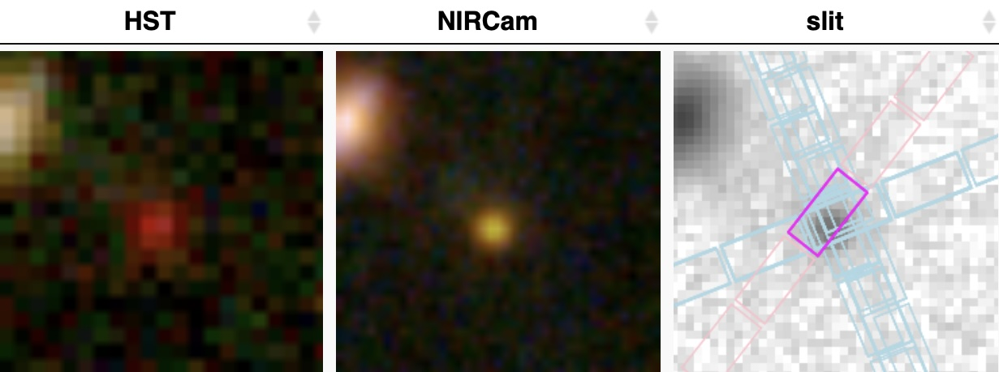
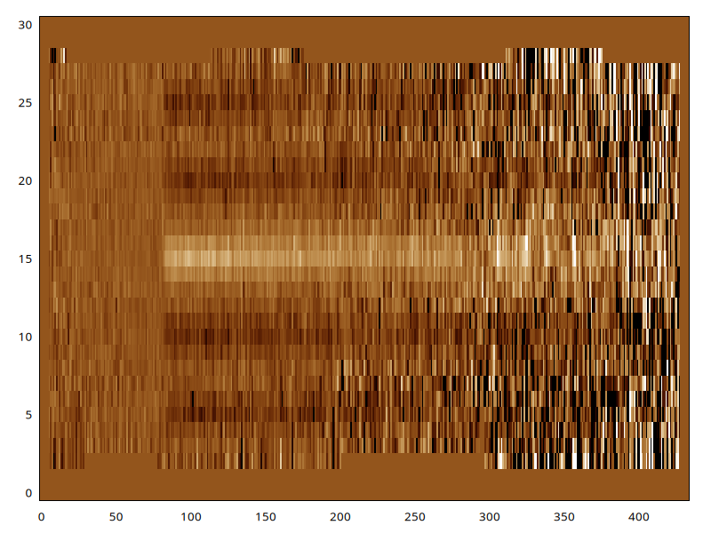
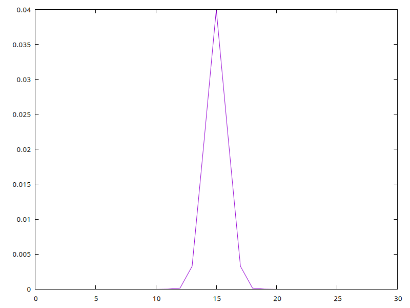
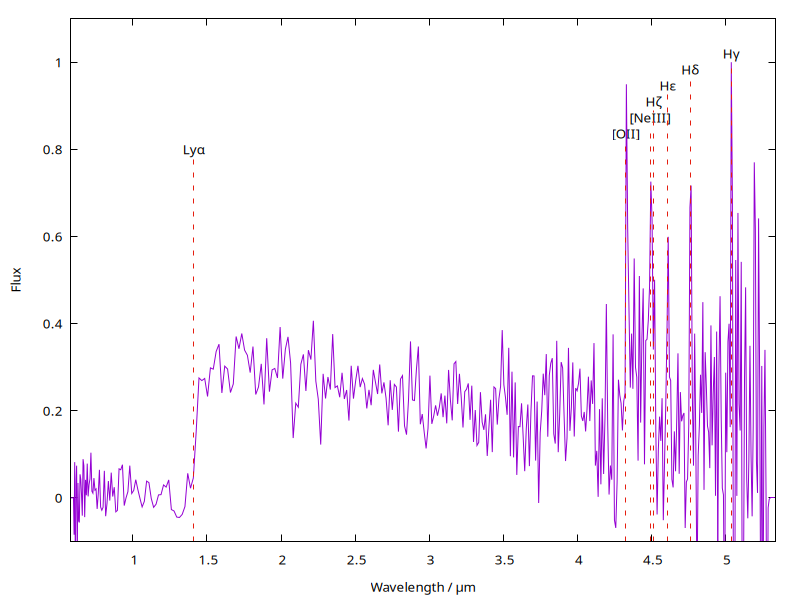

Day 25: PDL and the James Webb Space Telescope (broadcasting and dimension tricks)
The James Webb Space Telescope hangs like a Christmas tree ornament over Africa as it prepares to deploy its mirror and travel to its distant orbit. Image credit: NASA/ESA 25/Dec/2021.
PDL and the James Webb Space Telescope (broadcasting and dimension tricks)
I am an astronomer who has for 30 years used PDL for processing of astronomical data. (In fact this is one of the reasons I created it :-) see 'The Beginnings of PDL').
I still use it like this today. These days I am a Professor at Swinburne University in Melbourne Australia and while most of my work is in research management (!) I still tinker with data analysis and love to use PDL for this (though annoyingly I am often forced to use python in collaborations). In particular PDL is excellent for processing 2D images, 1D spectra and 3D 'integral field spectroscopy', I have used it to analyse data from telescopes such as AAT, Gemini, Keck, the Hubble Space Telescope (HST) and now the new James Webb Space Telescope (JWST). This was launched on Christmas Day 2021 so this 3-year anniversary seems appropriate. While much complex software has been written for JWST, for anything ad hoc or off-the-wall whipping something up in PDL is still the easiest thing, at least for me. :-)
So in this piece to illustrate PDL and especially its ability to write fast and flexible code without loops (I will show the use of broadcasting and tricks with dimensions) it seemed appropriate to use JWST data.
The galaxy GN-z11
This galaxy has a long history and was an early candidate for one of the most distant (and youngest) galaxies in the Universe. (Mind bendingly due to the finite speed of light we kind of observe the whole universe inside-out with the most distant galaxies being the earliest in cosmic time and the Big Bang being the furthest point we can see in all directions. Due to the expansion of the universe the light of distant galaxies is also extremely redshifted as we will see below). We will use PDL to process some JWST data and make a 1D spectrum where we can see the huge redshift.
Let's start with an image, here is an image of the galaxy:  (Image credit: DAWN JWST Archive)
This compares the Hubble Space Telescope (HST) and JWST (NIRCam infrared camera) images. It does not look very exciting. But on the right we see the meat of today's demonstration - this shows the location of spectroscopic slits. You can think of these are a series of slices through the galaxy where the light is dispersed to make a spectrum. (More info on how a long-slit spectrograph works).
We can download one of these slit spectra of this object from the DAWN JWST archive:
This is in the FITS format which is a RAW-type high dynamic range format used for professional astronomy images.
OK let's make a plot:
use PDL;
use PDL::Graphics::Simple qw(imag line plot);
$jwst = rfits 'goodsn-wide0-v3_prism-clear_1211_1268.spec.fits[2]'; # Image is in second FITS extension
imag $jwst, -0.05, 0.1, {justify=>0};
@dims = dims($jwst);
print join(" ", @dims),"\n";
You can see from the output this is a 2D image of dimensions 435x31 and here is what it looks like:

The horizontal bright trace down the middle is the spectrum of the galaxy. (The sharp cutoff on the left is due to the extreme redshift of the galaxy as we will see below, so is a genuine astrophysical effect and not an artefact). The dark bands either side are negative traces which are an artefact of the data reduction pipeline, specifically "sky subtraction via nodding the telescope". These should be ignored.
Dimension tricks
Standard procedure would be to sum along the columns of the image to produce a 435 pixel spectrum, summing up the flux of the galaxy along the slit.
We could use the sumover() function, but $jwst->sumover would sum along the rows and produce a 31 pixel ndarray which is not what we want.
'Reduction' operations like sumover(), average(), medover()etc. apply along the first axis and make a result with one dimension fewer.
To get what we want we have to transpose the image, i.e. swap the two axes.
There are various ways of doing this in PDL, the simplest is to use the mv() function as in $jwst->mv(1,0)->sumover().
This will move dimension 1 to the place of dimension 0, i.e. transposing the 2D ndarray.
You can see using dims()that the result is a 435 element 1D ndarray.
However in this case the resulting spectrum is hot garbage because by summing along the entire column one adds in the black trace artefacts.
Broadcasting
We need to only extract the central few rows. Code like
$jwst->slice(':,13:17')->mv(1,0)->sumover would work, but we can find a more optimal solution and demonstrate 'broadcasting' at the same time! First look at this code:
# Make a gaussian extraction profile
$x = xvals($dims[1]);
$fwhm = 2.1; # pix
$gaussian = 0.04*exp(-0.5*(($x-15)/($fwhm/2.35))**2);
line $x, $gaussian; # Plot
This code generates a 31 element gaussian function along the slit axis. Here is what $gaussian looks like:

(It does not look smooth as it is evaluated on a coarse pixel grid and is only a few pixels wide). If we can extract along the slit weighting by this gaussian we can get two things for the price of one: (1) eliminate the signal from the dark artefacts and (2) optimally weight the spectrum according to its light distribution along the slit (this arises from the shape of the galaxy) to get the most signal:noise.
Now we can do some broadcasting and some reduction:
$profile_weighted = $jwst * $gaussian->dummy(0); # Multiply through
$spec1d = $profile_weighted->mv(1,0)->sumover; # Extract by summing along columns
$spec1d = $spec1d/max($spec1d); # Normalise
Recall $jwst has dimensions 435,31. We see another dimension trick, $gaussian->dummy(0) adds a unit dimension at position 0 resulting in a dimension 1,31 ndarray. When we multiply these ndarrays together the second 31 element dimensions match, and the first dimensions (435 and 1) are also matched. What happens is PDL implicitly expands the unit dimension by repeating it 435 times, and in the multiplication $gaussian->dummy(0) behaves as a 435,31 ndarray. It is like multiplying two 435,31 ndarrays together. This ultimately results in the gaussian being multiplied through each column, which is then summed by the following line.
This trick is known as 'broadcasting' and is one of the most powerful PDL features.
You can see we have written some highly complex code to apply mathematical operations to the image as a function of x,y without writing a single loop!
Broadcasting is powerful because it can be applied along any axis with suitable dimension tricks using functions such as mv() and clump().
It is also extremely fast as it operates at speeds close to what would happen if the loops were written in C or FORTRAN.
When using it, I tend to need to experiment a bit to achieve what I want and look at the resulting dimensions.
The main rule to remember is dimensions need to match, this happens when they are either the same size, or when one of them is of size unity.
In the latter case the 'broadcasting' happens and you can think of it as growing the axis by repetition.
This all happens in the PDL internals during the operation it is being applied to, and the ndarray does not actually get any bigger nor use more memory!
Some dimension-changes like mv() are just different views on the same data.
The same goes for dimension manipulation with functions like mv(), the ndarray is not copied it is simply 'viewed differently'.
For switching other dimensions, try mv() and xchg().
For the first two (and inflating up to 2 dimensions if fewer), try transpose.
In very recent PDL versions there is also
t, which can also take a
complex conjugate in one go. It wouldn't be Perl if there wasn't "more
than one way to do it"!
More info on broadcasting and its rules is given in the pod PDL::Broadcasting.
A galaxy 30 billion light years away
We can now look at our resulting spectrum:
# Get wavelength array from fits table
$temp = rfits 'goodsn-wide0-v3_prism-clear_1211_1268.spec.fits[1]';
$wavelengths = $temp->{wave}; # if no Astro::FITS::Header, need 'wave '
@line_waves = (1216, 3728, 3870, 3890, 3971, 4103, 4342); # In Angstroms
# UTF-8, in bytes which is what Gnuplot needs
@line_names = ('|Lyα','|[OII]','|[NeIII]', '|Hζ', '|Hε', '|Hδ', '|Hγ');
$w_obs = pdl(\@line_waves)/10000; # Angstroms -> Microns
$redshift = 10.603;
$w_obs *= 1+$redshift; # apply the redshift
$label_height = $w_obs->xlinvals(0.8,1.02);
my @heights = ($label_height - 0.02)->list;
# Make a nice plot
plot
with=>'lines', $wavelengths, $spec1d,
(map +(with=>'lines', style=>7, pdl($_,$_), pdl(-1,shift @heights)), $w_obs->list),
with=>'labels', style=>7, $w_obs, $label_height, \@line_names,
{xlabel=>'Wavelength / μm', ylabel=>'Flux',
xrange=>[minmax($wavelengths)],yrange=>[-0.1,1.1]};
This code adds the wavelength calibration of the axis (which is complex and beyond the scope of this article) and makes a plot, adding labels for the location of some common spectral lines. Here is the plot:

What we see is a spectrum running from wavelengths 1 to 5 micrometers - this is beyond the range that the human eye can see because JWST is an infrared telescope. Looking at the spectral transitions there are two notable astrophysical features:
- The feature labelled 'Lyα' is the Lyman-α spectral line of hydrogen which is strong as it is to the ground state of the atom. Because intergalactic space at early times contains a lot of hydrogen everything shortwards of this wavelength is totally absorbed giving rise to the 'break' in the spectrum. Lyman-α has a natural wavelength of 1216 Å or 0.1216 µm, so why is it appearing at 1.4µm ? This is because the galaxy is so distant is has an enormous cosmic redshift. The redshift 'z' is 10.603, which means the wavelengths of the light is shifted by a factor of (1+z).
- One can confirm this by looking at the other lines. These are narrow 'emission lines' that appear as sharp spikes at the long wavelength end of the spectrum. The ones I have labelled are the most obvious and are from Neon (Ne), and more from hydrogen (H). The wavelengths are all known precisely from laboratory measurements and line up precisely when multiplied by (1+z). This cosmic redshift has been securely measured by JWST!
Extra Credit
If you want to know more about this galaxy and its spectrum you can read the wikipedia page linked above or take a look at this (admittedly technical) scientific paper. You will see a similar spectrum in the paper.
An interesting and straight forward exercise would be to use PDL to extract the slit profile and fit it with a gaussian to generate the extraction profile, rather than use my pre-canned one.
Image credit: NASA/ESA 25/Dec/2021

Karl Glazebrook
Karl Glazebrook is a Professor of Astronomy at Swinburne University of Technology in Melbourne, Australia. Originally from the UK he has worked for 30 years in the UK, the U.S. and Australia doing research on cosmology and the evolution of galaxies across time using observations on the largest telescopes, including the Keck observatory and the Hubble Space Telescope. He now leads a group at Swinburne studying the earliest galaxies with the new James Webb Space Telescope. In 1996 he created version 1.0 of PDL while on an observing trip to La Silla in Chile, due to his love of Perl and frustration with existing free software to do image processing.